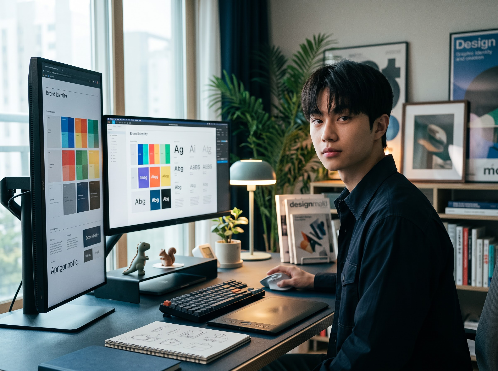

FROM REASON TO EXPERIENCEFROM REASON TO EXPERIENCE
CLEAR IDEAS LASTING EXPERIENCES
BRAND & DIGITAL DESIGNER
SEE HOW REASONTAKES SHAPE
명확한 생각이 브랜드와 디지털 경험으로 확장된 프로젝트를 소개합니다.
FEATURED PROJECTS
(2026)Premium EV Brand Experience
AETHER
BRAND IDENTITY
PROJECT TYPE
Self-Initiated Fictional Brand · 2026
ROLE
Brand Strategy, Identity, Digital Experience
SCOPE
Brand Identity, Applications, Mockup, Web Design, Brand Guide
DESCRIPTION
브랜드 철학을 하나의 경험으로 연결한 프리미엄 모빌리티, AETHER|프리미엄 모빌리티 브랜드의 철학을 아이덴티티에서 애플리케이션과 디지털 경험까지 일관된 시스템으로 확장한 브랜드 프로젝트입니다. 브랜드의 핵심 가치와 시각 언어를 중심으로 아이덴티티, 그래픽 시스템, 애플리케이션, 웹 경험을 유기적으로 설계하여 접점이 달라져도 동일한 브랜드 인상이 유지되도록 구성했습니다.|이를 통해 개별 결과물에 머무르지 않고 브랜드의 기준이 다양한 환경에서 일관되게 작동하는 통합된 브랜드 경험을 제안했습니다.
TOOLS
Figma · Illustrator · Photoshop · Generative AI
(2026)Festival Rebranding & Brand Experience
UN PEACE FESTIVAL
FESTIVAL REBRANDING
PROJECT TYPE
Rebranding Team Project
SCOPE
Brand Identity, Applications, Wayfinding, Website
DESCRIPTION
축제의 아이덴티티를 다양한 접점으로 확장한 브랜드 경험, UN평화축제|축제 리브랜딩을 통해 정립한 시각적 방향을 인쇄물과 굿즈, 공간 및 디지털 환경까지 일관되게 확장한 팀 프로젝트입니다. 포스터, 리플릿, 스태프 유니폼, 배너, 웹사이트 등 다양한 접점에서 동일한 그래픽 시스템이 유지되도록 구성했으며, 저는 애플리케이션 목업과 비주얼 프레젠테이션을 담당해 리브랜딩 결과물이 실제 축제 환경에서 어떻게 적용되는지를 구체적으로 시각화했습니다.|이를 통해 하나의 아이덴티티가 매체와 환경이 달라져도 일관된 인상으로 이어지는 축제 브랜드 경험을 제안했습니다.
TOOLS
Figma · Illustrator · Photoshop · Generative AI
(2024)Home Experience Redesign
CATCHTABLE
UX/UI TEAM PROJECT
PROJECT TYPE
Concept UX/UI Redesign · Team Project · 2024
ROLE
Visual Concept, UI Design
SCOPE
UX Review, Moodboard, Home Tab Redesign, Content UI
DESCRIPTION
콘텐츠 탐색의 흐름을 다시 정리한 홈 경험 개선, CATCHTABLE|기존 홈 화면의 정보 구조와 콘텐츠 경험을 분석하고 사용자가 주요 다이닝 콘텐츠를 보다 명확하게 탐색할 수 있도록 개선한 UX/UI 팀 프로젝트입니다. 콘텐츠의 우선순위와 화면 내 정보 위계를 정리하고, 미쉐린 가이드와 다이닝 매거진 등 주요 콘텐츠 영역의 시각적 구조를 재설계하여 홈 화면에서의 탐색 흐름을 보다 일관되게 구성했습니다.|이를 통해 다양한 콘텐츠가 하나의 화면 안에서 경쟁하기보다 각 정보의 역할이 명확하게 구분되고 자연스럽게 다음 탐색으로 이어지는 홈 경험을 제안했습니다.
TOOLS
Figma · Illustrator · Photoshop
(2024)Shared Office Brand & App Experience
MILE
BRAND & APP TEAM PROJECT
PROJECT TYPE
Fictional Brand & Service · Team Project
ROLE
Brand Identity, Visual Design, App UI
SCOPE
Brand Identity, Visual System, Applications, Mobile App
DESCRIPTION
브랜드와 서비스를 하나의 흐름으로 연결한 공유 오피스 경험, MILE|거점형 공유 오피스의 브랜드 아이덴티티와 모바일 서비스를 하나의 경험으로 연결해 설계한 브랜드·디지털 팀 프로젝트입니다. 브랜드의 시각적 기준을 아이덴티티와 그래픽 시스템으로 정립하고, 이를 애플리케이션과 모바일 UI까지 확장하여 오프라인 브랜드 인상과 디지털 서비스 경험이 분리되지 않도록 구성했습니다.|이를 통해 공간을 표현하는 브랜드와 서비스를 이용하는 디지털 경험이 동일한 언어로 이어지는 일관된 공유 오피스 브랜드 경험을 제안했습니다.
TOOLS
Figma · Illustrator · Photoshop
AETHER BRAND IDENTITY — 2026
ARCHIVE
THE WORK CONTINUES
대표 프로젝트 너머, 다양한 프로젝트와 시각적 실험을 기록합니다.
PROJECT ARCHIVE
VISUAL ARCHIVE
ABOUT
I AM BRAND & DIGITAL DESIGNER
BX 디자인을 기반으로 브랜드의 시각적 정체성과 디지털 경험을 연결합니다.
문제와 목적을 이해하는 것에서 시작해 명확한 디자인 기준을 세우고, 이를 다양한 접점에서 일관되게 작동하는 시각 시스템으로 확장합니다.

(NAME)
KIM JEONGHEON
(CAPABILITIES)
BRAND IDENTITY VISUAL SYSTEMS GRAPHIC & EDITORIAL DESIGN UI DESIGN DIGITAL EXPERIENCE
(TOOLS)
FIGMA ILLUSTRATOR PHOTOSHOP INDESIGN AFTER EFFECTS PREMIERE PRO VISUAL STUDIO CODE GENERATIVE AI